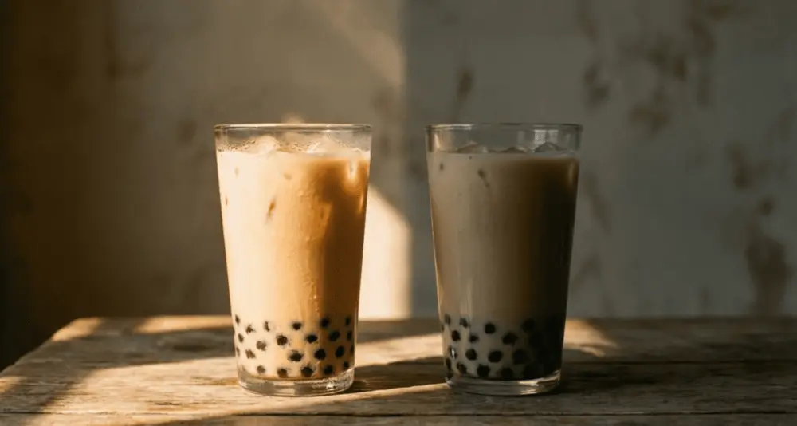
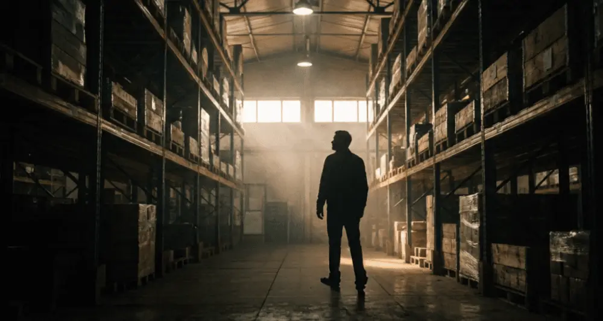
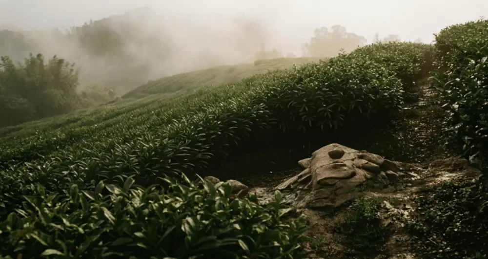

文章 / 飲品配方與資訊
OEM vs Private Label Bubble Tea: Which Model Is Right for Your Brand?
這篇是英文原文，尚未完成繁體中文翻譯。中文選單與相關商品連結不會切回英文介面。
查看英文原文（尚未翻譯）
Choosing the wrong supply chain model can cost a bubble tea brand 30-50% more in upfront investment without delivering meaningful market differentiation. The global OEM/ODM bubble tea materials market reached USD 1,041 million in 2024 and is projected to grow to USD 1,996 million by 2034 at a 9.9% CAGR, according to IntelMarket Research. This guide breaks down the practical differences between OEM and Private Label models across cost structure, brand control, minimum order quantities, and ideal use cases — so brand owners can make an informed supply chain decision.
What Do OEM and Private Label Mean in Bubble Tea?
OEM (Original Equipment Manufacturer) means the brand provides the full product specification — formulas, ingredient ratios, texture parameters, packaging design — and the factory manufactures to those exact requirements. The brand owns the intellectual property. This model works best for mid-to-large beverage companies with in-house R&D capabilities.
Private Label means the manufacturer offers a ready-made product catalog, and the brand selects products to rebrand with its own packaging and logo. The manufacturer retains the formulas and handles quality control. Bubble tea supplies under Private Label typically include tapioca pearls, flavored powders, syrups, toppings, and packaging — giving new brands a complete product lineup without R&D investment.
ODM (Original Design Manufacturer) sits between the two. The manufacturer designs and produces the product, and the brand can request adjustments before relabeling. Most Taiwan-based boba tea suppliers offer all three service models, allowing clients to scale from Private Label to full OEM as their business grows.
Cost Breakdown: Upfront Investment vs Long-Term Returns
The financial profiles of OEM and Private Label differ substantially. Here is a comparison based on typical pricing from Taiwan-based suppliers.
| Cost Category | OEM Model | Private Label Model |
|---|---|---|
| Formula Development | USD 5,000-20,000 | Usually free (existing formulas) |
| Tooling & Packaging Design | USD 3,000-15,000 | USD 500-3,000 (label changes only) |
| MOQ (Tapioca Pearls) | 1,000-5,000 kg | 500 kg minimum |
| Per-Unit Cost | Lower (volume discounts) | Higher (R&D costs baked in) |
| Time to Market | 3-6 months | 1-3 months |
OEM demands higher upfront capital but delivers stronger per-unit economics over time. A brand purchasing 10,000 kg of tapioca pearls annually can expect 15-25% lower ingredient costs through OEM compared to Private Label. Private Label wins on speed and accessibility — ideal for brands that need products on shelves within 90 days.
Brand Control: Formula Ownership and Differentiation
The model you choose determines how much control you retain over your product.
Under OEM, the brand owns the formula entirely. You can specify pearl diameter (common sizes: 8mm, 10mm, 12mm), chewiness, cooking time, and even require specific cassava starch origins. This depth of customization creates a product-level moat that competitors cannot easily replicate.
Private Label offers limited product differentiation. Multiple brands may sell identical base products with different packaging, and consumers often cannot tell the difference in blind tests. The competitive advantage shifts entirely to branding, marketing, and distribution.
For brands targeting North America or Europe, formula ownership carries additional regulatory weight. OEM brands can ensure ingredient compliance with FDA labeling rules or EU food safety standards from the source level. Private Label brands depend on the manufacturer’s compliance infrastructure.
How to Evaluate Boba Tea Suppliers for Either Model
Regardless of which model you choose, supplier selection determines success or failure. Taiwan — the birthplace of bubble tea — houses the most mature boba supply chain ecosystem globally, with over 40 years of industry expertise and a proven track record in international food safety compliance.
When evaluating boba tea suppliers, assess five dimensions. First, certifications: prioritize suppliers with ISO 22000, HACCP, and FSSC 22000. These certifications indicate international-standard food safety management. Second, OEM/ODM flexibility: confirm whether the supplier supports both models and offers end-to-end services from formula development to packaging design. Third, MOQ thresholds: requirements can vary by 5-10x between suppliers, so new brands should seek partners willing to offer first-order discounts or trial quantities. Fourth, R&D capabilities: can the supplier develop products aligned with current trends like low-sugar, plant-based, or functional ingredients? Fifth, export experience: familiarity with target market import regulations, labeling requirements, and logistics directly impacts lead times and compliance risk.
Taiwan’s bubble tea ingredient export revenue exceeds USD 500 million annually, supplying over 80% of the world’s tapioca pearls and related materials. Major export destinations include Southeast Asia, North America, and Europe. For overseas buyers searching for wholesale bubble tea suppliers, Taiwan manufacturers offer quality consistency, comprehensive product lines, and the flexibility to support both OEM and Private Label partnerships.


MOQ Comparison: Wholesale Purchasing Under Each Model
Minimum order quantity is often the deciding factor for new brands. Based on standard Taiwan supplier terms, here is how MOQs compare.
| Product Category | OEM MOQ | Private Label MOQ |
|---|---|---|
| Tapioca Pearls | 1,000-5,000 kg | 500 kg minimum |
| Syrups | 500-2,000 kg | 200 kg minimum |
| Flavored Powders | 300-1,000 kg | 100 kg minimum |
| Packaging Materials | 10,000-50,000 units | 5,000 units minimum |
OEM carries higher MOQs because tooling costs and production line adjustments must be amortized across the order. If your monthly sales volume has not yet stabilized at three times the MOQ, Private Label is the more practical starting point. Bubble tea wholesale purchasing also requires shelf-life planning — tapioca pearls typically carry a 6-12 month shelf life, and over-ordering leads to inventory waste.
Which Model Fits Your Brand? A Decision Framework
Model selection should match your brand’s growth stage, capital availability, and strategic goals.
OEM fits brands that have defined product specifications and formula requirements, maintain stable monthly purchase volumes above MOQ thresholds, possess or are willing to invest in R&D capabilities, and aim to build product-level competitive advantages. Typical examples include chain tea brands expanding internationally and beverage companies developing RTD (ready-to-drink) bottled products.
Private Label fits brands that are entering the bubble tea market for the first time, operate with limited startup capital, need products market-ready within 90 days, and want to test consumer response before committing deeper investment. Typical examples include coffee shops adding boba to their menu, e-commerce brands launching private label boba tea supplies, and restaurant operators testing bubble tea as a new category.
Hybrid approach: Many successful brands follow a “Private Label first, OEM later” progression. Year one uses Private Label for rapid market entry and demand validation. Once monthly volumes show consistent growth, the brand transitions to OEM for proprietary formulas and long-term cost optimization.


Practical Considerations for Sourcing from Taiwan
Taiwan is the world’s largest exporter of bubble tea raw materials. When establishing OEM or Private Label partnerships with Taiwan suppliers, several operational factors require advance planning.
For international logistics, ocean freight offers the best cost efficiency. Transit time from Taiwan to the US West Coast runs 15-20 days; to major European ports, 30-35 days. Air freight suits urgent orders or sample shipments but costs 5-8x more. The recommended approach: ship initial samples by air for quality verification, then place production orders via ocean freight.
Payment terms among Taiwan suppliers commonly include T/T (telegraphic transfer) with 30% deposit and balance before shipment, or L/C (letter of credit). Long-term clients may negotiate OA (open account) terms of 30-60 days.
Starting a bubble tea business involves more supply chain complexity than most entrepreneurs anticipate. From ingredient procurement and warehouse management to retail distribution, every link requires close coordination with your supplier. Choosing between OEM and Private Label is step one — ongoing supply chain execution is what determines long-term competitiveness.


Sources
- IntelMarket Research — OEM/ODM Bubble Tea Materials Market Outlook 2024-2034
- Emergen Research — OEM/ODM Bubble Tea Materials Market Size & Share
- Grand View Research — Bubble Tea Market Size, Share & Trends Analysis Report
- IBISWorld — Bubble Tea Shops in the US Industry Report
- FDA — Food Labeling & Nutrition
Frequently Asked Questions
OEM means the brand provides full formulas and specifications for the factory to produce. ODM means the manufacturer handles both design and production, with the brand making adjustments before relabeling. ODM suits brands that lack R&D resources but want product differentiation beyond standard Private Label.
In North America, Private Label tapioca pearls cost approximately USD 3-5 per kg wholesale. Retail pricing typically reaches USD 12-18 per kg, yielding gross margins of 60-70%. Actual profitability depends on brand positioning, packaging investment, and distribution channel.
Franchise agreements require brand licensing fees of USD 15,000-80,000 and strict adherence to the franchisor’s SOPs. Private Label involves purchasing products and selling them under your own brand with no operational constraints. Franchises suit newcomers needing turnkey support; Private Label suits operators with existing distribution.
Taiwan’s Taiwantrade.com portal lists ISO 22000-certified manufacturers. Buyers can also contact established suppliers like Yen Chuan directly. Most Taiwan suppliers offer free sample shipping and flexible first-order terms for new clients.
New brands should start with Private Label. Lower upfront investment and 1-3 month launch timelines allow for rapid market testing. Once monthly volumes consistently exceed 3x the MOQ threshold, transitioning to OEM for proprietary formulas makes strategic sense.
Author: Yen Chuan Marketing Team
With over 40 years in bubble tea ingredient manufacturing, Yen Chuan has supported brands across 60+ countries in their journey from concept to market. In our experience, the most successful partnerships begin with the right model choice. Investing in OEM too early can strain cash flow; staying on Private Label too long limits brand equity. The goal is not to pick the “best” model — it is to match the model to your brand’s current stage and growth trajectory.
If you are evaluating OEM or Private Label partnership options, contact Yen Chuan to schedule a consultation. Our team will recommend the supply chain approach best suited to your brand scale and market objectives.